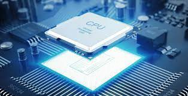
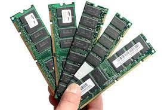
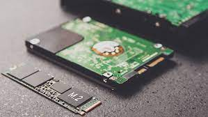
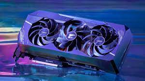

Para escolher, primeiro você tem que saber qual o teu uso, estudar, trabalhar, jogar,etc...
Após isso vai vendo o que cada um se adapta a ti!
Para uma busca rapida, se deve olhar:
Para escolher, primeiro você tem que saber qual o teu uso,
estudar, trabalhar, jogar,etc...
Após isso vai vendo o que cada um se adapta a ti!

Tente sempre comprar o mais recente, mas qual é melhor pra ti?
Processador tem varios, boa sorte, tu encontra um que lhe agrade.

Escolha 8 gb, só vai e confia.

É o tanto que vai guardar, guarda muita coisa,
compre um bem grande.
Se possivel um SSD também ajuda na agilidade das
tarefas.

Vai jogar ou trabalhar pesado? Eu indico,
caso contrário, não há tanta necessidade.